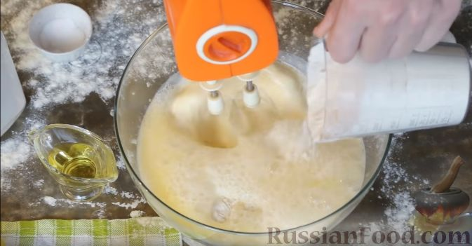
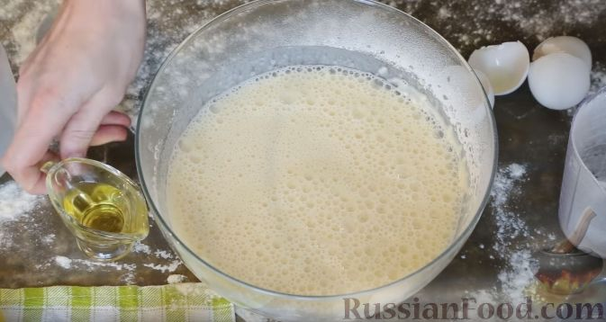
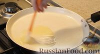
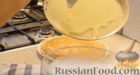
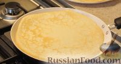
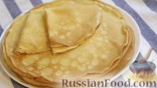

| Ингридиент | Количество |
| Молоко | 500 мл |
| Яйца | 2 шт |
| Масло растительное | 1 ст. ложка |
| Мука | 200 г |
| Сахар | 1 ст. ложка |
| Соль | 1 щепотка |
| Масло сливочное | 1 ст. ложка |
Сахар можно заменить несколькими ингридиентами:
Размешайте яйца с солью и сахаром (венчиком или миксером). Влейте молоко (желательно слегка тёплое, или комнатной температуры). Понемногу добавляя просеянную муку, перемешайте блинное тесто венчиком, чтобы добиться однородной консистенции без комочков.
Тесто для блинов должно быть достаточно жидким, чтобы блинчики получались тонкими. Влейте в тесто растительное масло. Перемешайте. Оставьте блинное тесто на 15-20 минут.
Хорошо разогрейте сковороду и слегка смажьте её маслом.
Налейте в центр сковороды небольшую порцию теста. Сразу же вращайте сковородку по кругу, чтобы тесто равномерно распределилось по всей поверхности.
Жарьте тонкие блины на среднем огне (или чуть выше среднего) до румяности с двух сторон. Переворачивайте блинчик аккуратно, поддевая лопаткой с края. Готовые блины выкладывайте на тарелку и сразу смазывайте сливочным маслом, чтобы края не были сухими и блинчики получились нежными.
Подавайте блинчики с вареньем, джемом или сгущенкой. Приятного аппетита!
